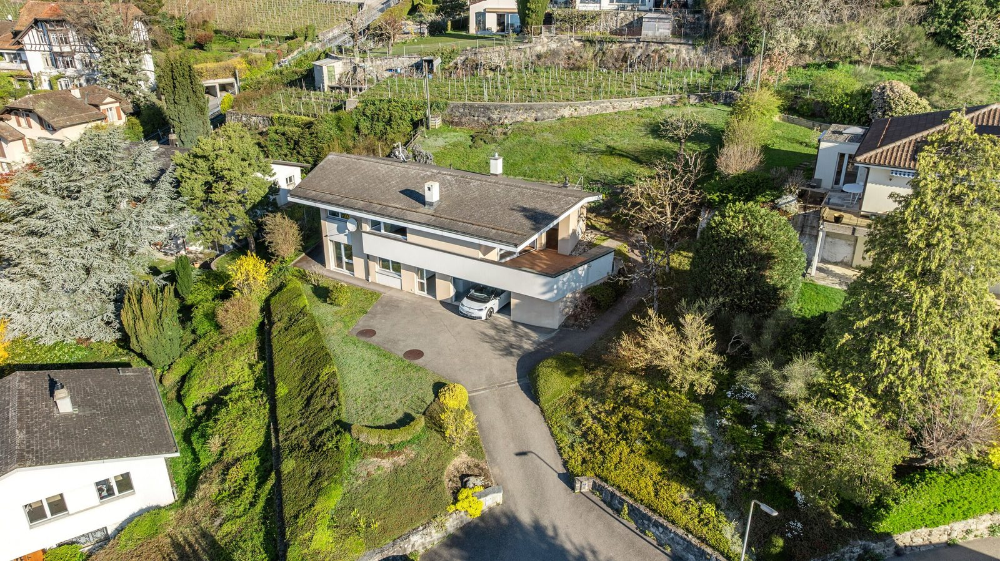
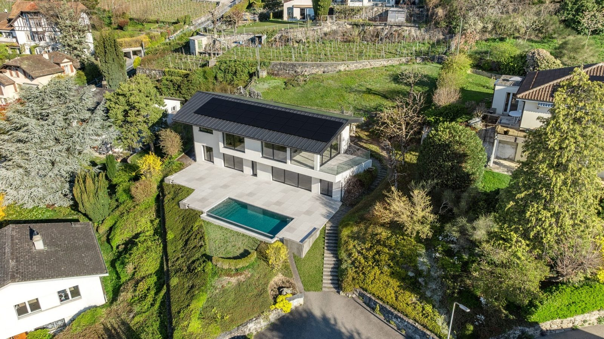

Illustrations après travaux
La photo drone de l’annonce, avant et après la rénovation de la variante réaliste (base). Glisser le curseur pour comparer. Plus bas, d’autres vues drone et toutes les options de parking. Toutes les vues viennent du même modèle 3D, calé sur les photos et sur les données swisstopo autour de la parcelle.
Base + piscine
Terrasse en dalles de pierre, piscine à débordement 7 × 3 m
 AvantAprès
AvantAprès
Base · bois et gazon
Sans piscine : terrasse en bois le long de la maison, gazon devant AvantAprès
AvantAprès
Autres vues et options
3 vues drone × 6 variantes · glisser pour comparer

AvantAprèsSite réel en 3D
Toute la parcelle dans son quartierLa maquette 3D du projet a un mode « Site réel » : 400 × 400 m autour de la parcelle, avec l’orthophoto swisstopo 2023 (10 cm), le relief, les arbres et les haies (swissSURFACE3D) et les bâtiments voisins (swissBUILDINGS3D). On y voit la maison dans la parcelle entière, le garage et l’accès en bas, et chaque option.
Ouvrir la maquettePlan de masse
Base + piscine 7 × 3 m, nord en haut
Comment ces images sont faites
- Le plan de la maison est calé sur le cadastre officiel (parcelle 475, écart moyen 8 cm), ce qui place la maquette dans les coordonnées suisses avec le terrain, l’orthophoto et les bâtiments swisstopo.
- Chaque photo drone a sa caméra recalculée sur des points de la maison et de la cour (angles du toit, cheminées, regards, caniveau) : environ 9 à 10 pixels d’écart sur 2560. La vue depuis la colline (photo 09) a été essayée mais écartée : l’IA n’y respectait pas la maquette.
- La maquette de chaque variante est rendue dans Blender depuis cette caméra, puis incrustée dans la photo, seulement là où quelque chose change ; le quartier reste la photo.
- Une IA d’édition d’image (Gemini) rend seulement les matériaux et la lumière réalistes, dans la zone modifiée.
Ce sont des illustrations, pas des plans. Les proportions viennent des esquisses (calées à environ 20–30 cm). Couleurs, matériaux, mobilier et intérieurs visibles sont des hypothèses ou ont été ajoutés par l’IA ; l’IA peut aussi simplifier des détails.